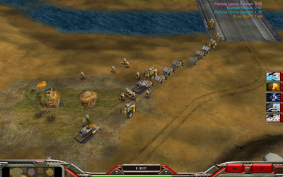

This screenshot shows Minken himself returning to the battle fields after many years...

Obviously he does not yet understand the use of tunnel networks. ;)
Feel free to distribute my maps. Happy gaming! :)
/Hogmark
back